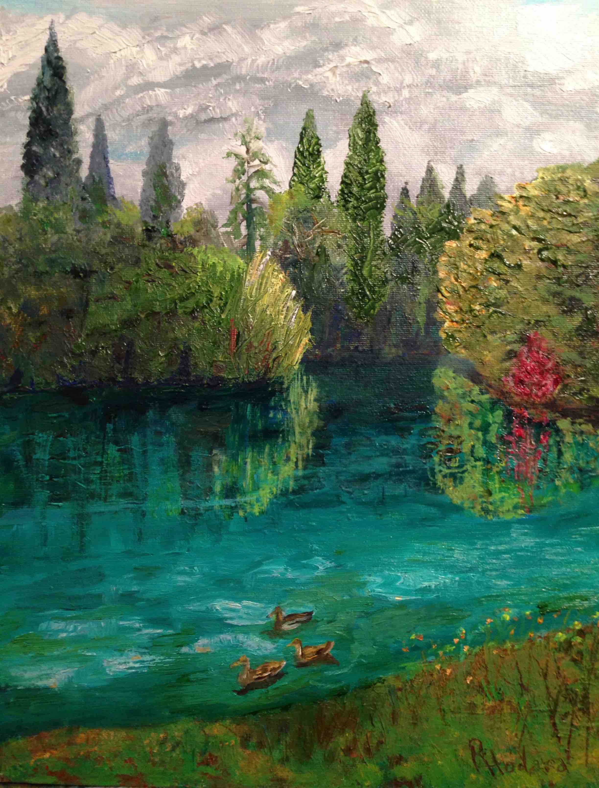
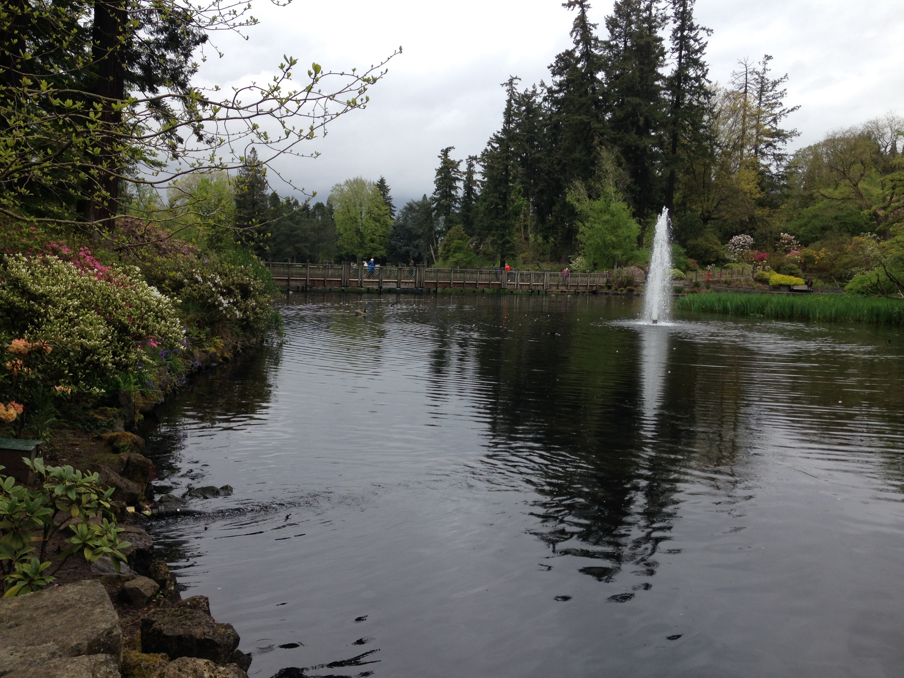
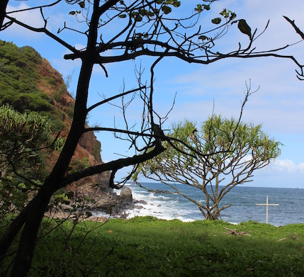
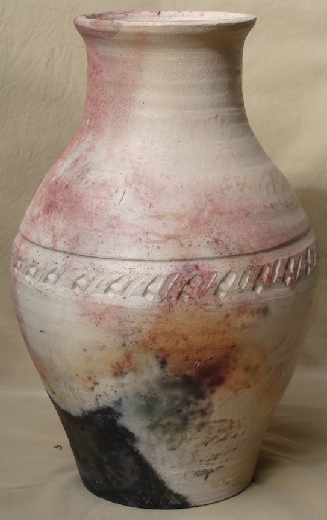
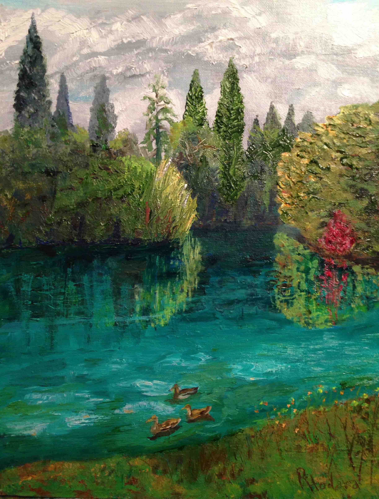
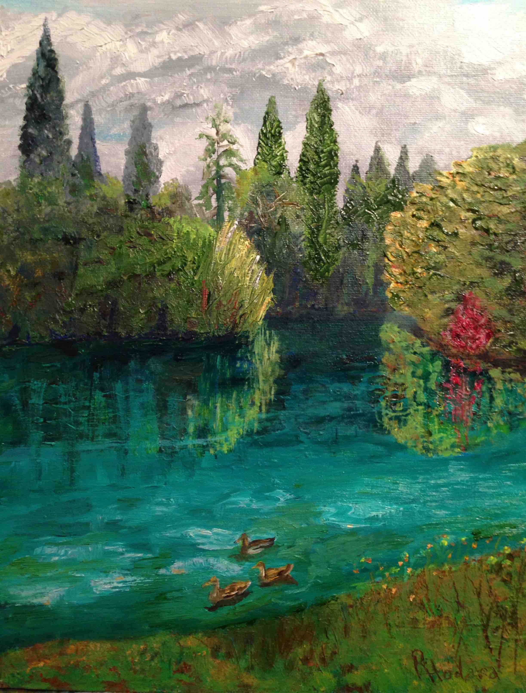
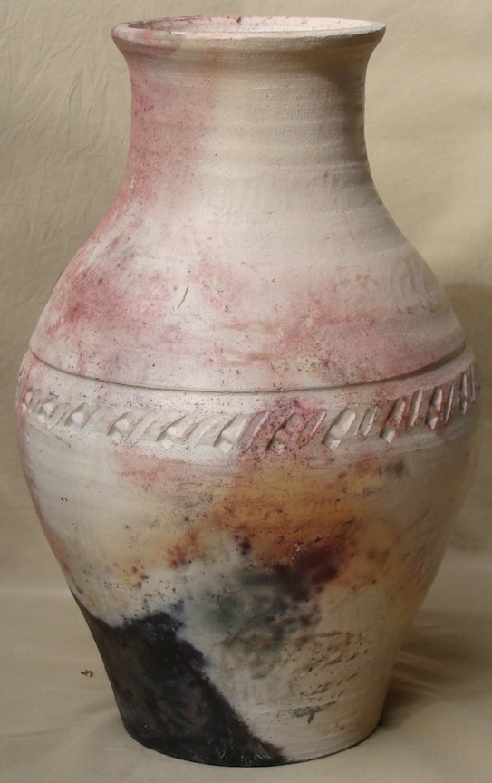
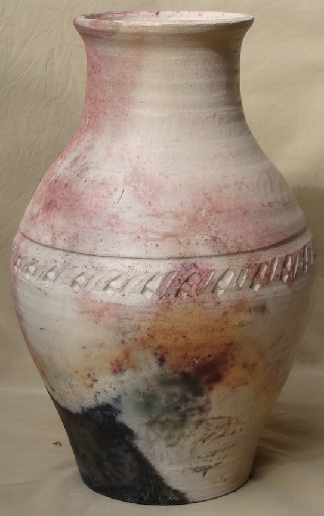

I have lived on Maui, Hawaii and most recently in Portland, Oregon. The inspiration for my paintings is the natural beauty of the world. People also inspire me.

Laurelhurst Park, Portland, Oregon - August 2016 Deschutes River - La Pine State Park, Oregon - August 2016 Portland Boat Harbor - Portland, Oregon - Spring 2017 Horse Tail Falls, The Columbia Gorge- May 2017 Crystal Springs Rhododendron Garden - Portland, Oregon - Spring 2017

Crystal Springs Rhododendron Garden - Portland, Oregon - Spring 2017 Shemanski Fountain, - Portland, Oregon This Italianesque trefoil design fountain was a gift to the city from Joseph Shemanski in 1926 to thank the city for its kindness to him. Shemanski was a Polish immigrant who went from being a traveling clock salesman to successful businessman. Hoyt Arboretum - Spring 2017 Crystal Springs Rhododendron Garden - Portland, Oregon - Spring 2017

Maui Hala TreeMichelle, May 2015
Ceramics
When I moved to Kona, Hawaii at the age of 22, I took a night class in ceramics at Konawaena High School. Learning how to center clay on a wheel was a big challenge and I was hooked. I have a kiln and pottery wheel in my home on Maui. I am inspired by the natural beauty of Maui.
Ae'o Hawaiian Stilt Bird alal? Hawaiian Black Crow iiwi bird Bowl with taro (kalo) design

Pit fired vasesJust Playing
 


 
